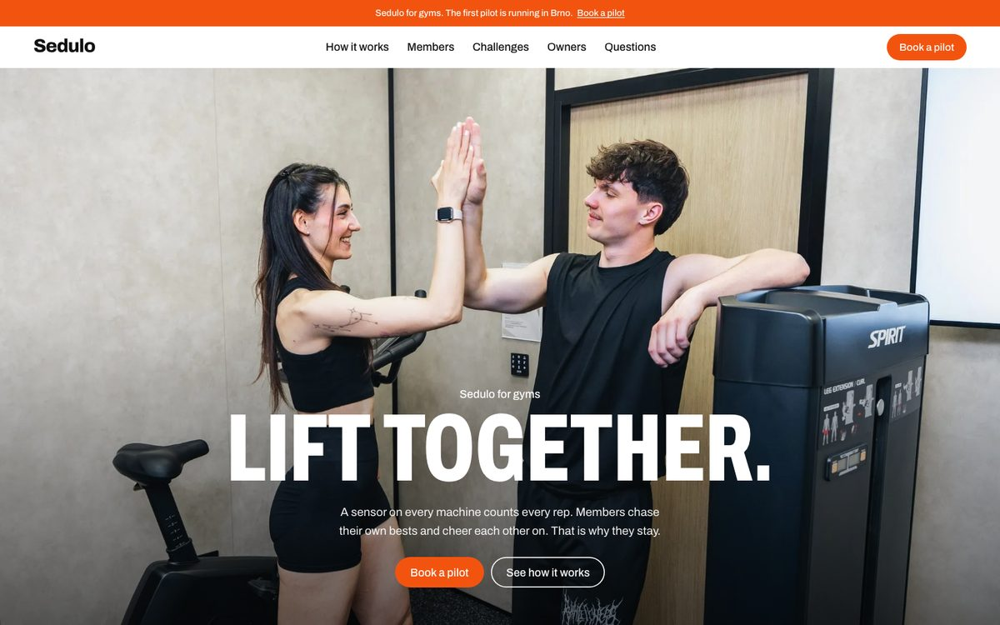

If we sell to gymsSedulo

Lift together.
- Leads with
- Members stay where they get stronger and where someone notices. The sensor counts every rep, set and rest. Members beat their own bests first, then the gym joins in: spots, one shared number each week, challenges for every level, gym against gym.
- Why gyms buy
- Gyms already pay for member engagement, not only for data: Myzone sells it to 5,000+ facilities. Its retention gains are its own claims, not proof for us. Ours needs no extra wearable, because the machines count.
- The look
- Nike’s language with orange in the middle (picked 21 Nov): orange for every main button, the ends of the big headlines, the week’s number and the pilot section, black and white for the rest. Huge condensed uppercase headlines, square photos, white headings on orange. Real colour photos of people, the high five as the hero. No mascot.
- Built on
- Fun and together, trainers and trainees, and the gym rows in the benefits below.
- Takes from
- Nike: the look and the sure voice, measured on nike.com. Strava: the activity card. Myzone: effort over ability, a portal for owners. The sensor: the newest renders.
- Next
- Picked: the middle amount of orange. Next: a member shoot with real regulars (the shot list is on the brand page), then the pilot.